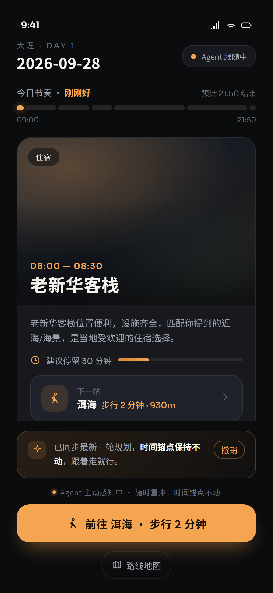
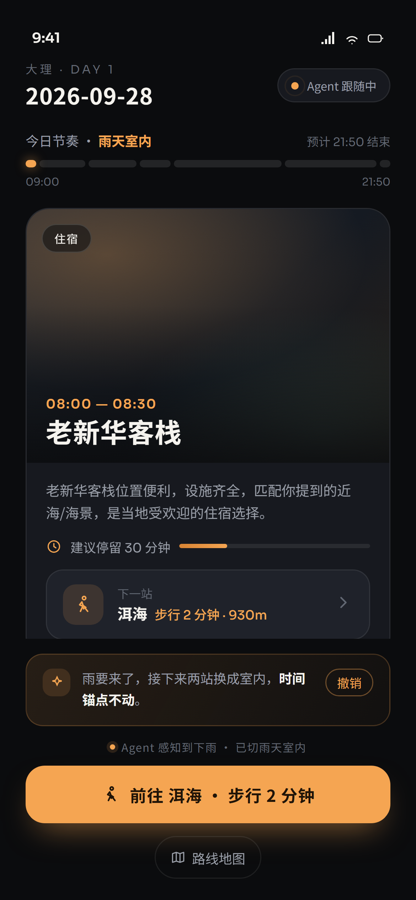
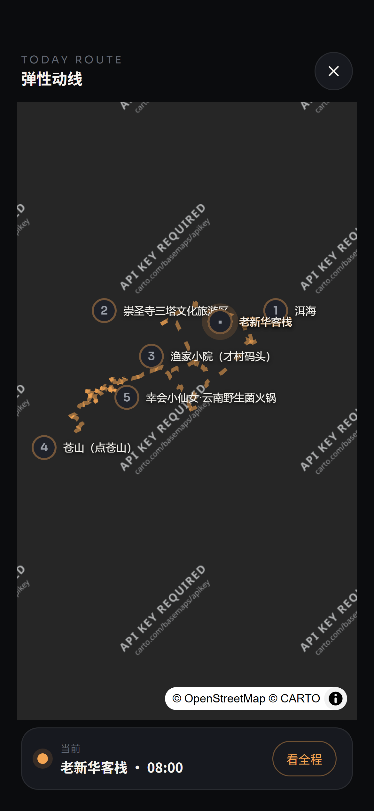
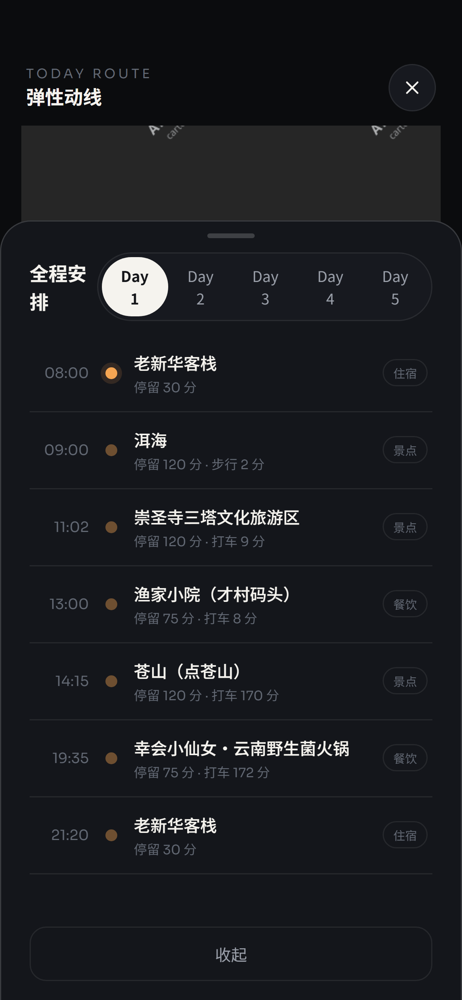
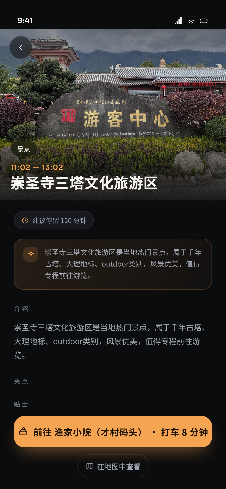

弹性旅程带 = 一天的时间占比（宽窄随 Agent 调速实时伸缩）→ Now 主卡：实拍大图 + 时间档 + 建议停留 + 下一站。

信号不由用户上报：Agent 从步速 / 位置 / 天气 / 对话里自己感知，判定后直接重排——节奏标签切到「雨天室内」，户外段收起、气泡说明改了什么，可一键撤销。

地图平时不占屏；呼出后是当天完整动线——已走实线带流动光效、未走虚线，站名常驻，底部停当前站。

78% 上滑抽屉：Day 切换 + 时间轴列表（停留 / 交通分钟数），底部「AGENT 暂时收起 · 可请求加回」备选块。

点 Now 卡进入：大图头图 + 时间档 + 事实 chip（停留 / 时间锚点 / 已预订）+ Agent 安排理由 + 介绍·亮点·贴士·实用信息 + 到达/下一站动线。
#0B0C0E／卡 #17191F／浮层 #1F222A，描边 rgba(255,255,255,.08)#F5A552；#63AAA1 仅用于「歇脚/非景点」节点PA_TRAVEL_SET_PLAN(plan) 注入每轮规划，整页重渲染PA_TRAVEL_SIGNAL(ev, note) —— Agent 侧感知到「慢了 / 下雨 / 累」后推入，页面只被动重排（无手动上报）PA_TRAVEL_REQUEST_ALT(id) 请求把 Agent 收起的备选站加回server/web/travel-map/mobile.html，与桌面 panel.html 同路由域，按 UA 分流；强制移动版 /travel-map/mobile?planId= 读服务端真实行程仓库 GET /travel/plans/:planId（手机端默认）· ?id= 读内存载荷 · ?host=1 由宿主桥注入days[].items[]（仓库）/ days[].entries[]（内存）→ 本设计 stops[] 一层适配：绝对分钟、停留时长、坐标、站间交通方式/travel-basemap/style/dark 瓦片代理；站点无自带图时按需取 /travel-poi/details 真实实拍；无坐标回落 SVG 动线plan-data.js 由 tools/build-plan.mjs 生成），图片为真实 POI 实拍mobile-home.html 主界面（可点：地图 / 抽屉）mobile-detail.html 站点详情（?stop=&day= 定位）plan-data.js 真实行程数据（生成物，勿手改）；加 ?empty=1 看空态mockup.png 本评审长图